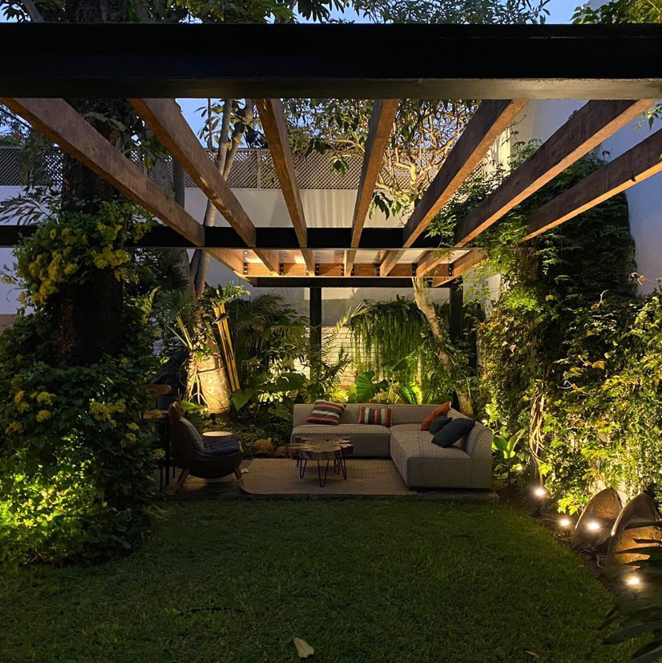

Maria Angela
Maldonado
Fuentes

Diseño, restauración y gestión integral de obra. Una arquitectura contextual, sostenible y humana.
01 · Tesis de titulación
D. P. A.

Proyecto de tesis en colaboración con Paul Cruz, asesorado por Karen Takano. La propuesta reestructura un puerto pesquero clave del sur del Perú, integrando desarrollo urbano, frente marítimo y vida comunitaria.
02 · Proyecto residencial
Portillo

PORTILLO(images/portillo-cover.jpg)
Implementación de diversas áreas de una vivienda, enfocándose principalmente en la zona de terraza, con diseño de iluminación que resalta la nueva sala exterior bajo sol y sombra.
03 · Proyecto retail
TFOP

Co-diseño e implementación de óptica boutique en centro comercial — 31.9 m², paleta verde salvia y exhibición curada del producto. Implementación nocturna en horario permitido por el centro.
04 · Proyecto residencial
DPTO U

Redistribución y diseño interior de un departamento de un nivel — 40 m². Reorganización completa de planta y carpintería a medida con foco en calidez y funcionalidad.
05 · Proyecto residencial
Terraza Manrique

Remodelación completa de una terraza con zona de parrilla y división con piscina — 56 m². Trabajo en conjunto con un especialista paisajista.